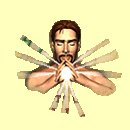
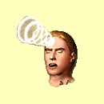
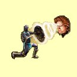
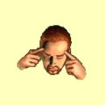
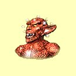
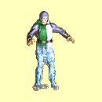
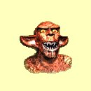
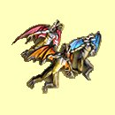
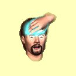

Magie mysli
Sejmi strach
Mana: 1, Cena: 100, Potøebná úroveò dovednosti: Normální
Odstraní strach postavì, pokud kouzlo se¹le¹ vèas. Vy¹¹í úroveò v Magii Mysli ti umo¾ní kouzlo kouzlit po del¹í dobì strachu postavy, ne¾ se kouzlo stane nefunkèním. Poté ji¾ nezbývá nic jiného, ne¾ odpoèinek nebo náv¹tìva chrámu.
|  | Normální | Funguje, pokud má postava strach ménì ne¾ 3 minuty za bod dovednosti |
| Expert | Funguje, pokud má postava strach ménì ne¾ 1 hodinu za bod dovednosti | |
| Mistr | Funguje, pokud má postava strach ménì ne¾ 1 den za bod dovednosti | |
| Velmistr | Nezále¾í na tom, jak dlouho má postava strach |
Mentální úder
Mana: 2, Cena: 200, Potøebná úroveò dovednosti: Normální
Vy¹le my¹lenkový impuls, který po¹kodí nervový systém cíle. My¹lenkový úder zpùsobí 3 body po¹kození plus 1-3 body za bod dovednosti Magie Mysli.
|  | Normální | Pomalé zotavení |
| Expert | Rychlej¹í zotavení | |
| Mistr | Rychlej¹í zotavení | |
| Velmistr | Nejrychlej¹í zotavení |
Odolnost proti mysli
Mana: 3, Cena: 300, Potøebná úroveò dovednosti: Normální
Zvý¹í v¹em postavám odolnost proti kouzlùm mysli o 1 za ka¾dý bod dovednosti v Magii Mysli. Doba trvání je jednu hodinu za ka¾dý bod dovednosti.
|  | Normální | 1 bod odolnosti za bod dovednosti |
| Expert | 2 bod odolnosti za bod dovednosti | |
| Mistr | 3 bod odolnosti za bod dovednosti | |
| Velmistr | 4 bod odolnosti za bod dovednosti |
Telepatie
Mana: 4, Cena: 400, Potøebná úroveò dovednosti: Normální
Sesílatel kouzla ète my¹lenky obìti a dozví se, jaké pøedmìty a kolik zlata u sebe má.
|  | Normální | Del¹í doba na zotavení |
| Expert | Krat¹í doba na zotavení | |
| Mistr | Je¹tì krat¹í doba na zotavení | |
| Velmistr | Nejkrat¹í doba na zotavení |
©arm
Mana: 5, Cena: 500, Potøebná úroveò dovednosti: Expertní
Uklidní vybraného protivníka a odstraní v¹echny jeho nepøátelské pocity vùèi dru¾inì. Jakmile nestvùra ztratí nìjaký ¾ivot, efekt kouzla pomine.
|  | Normální | n/a |
| Expert | Trvání 5 minut za ka¾dý bod dovednosti | |
| Mistr | Trvání 10 minut za ka¾dý bod dovednosti | |
| Velmistr | Kouzlo trvá, dokud dru¾ina neopustí lokaci |
Odstraò ochromení
Mana: 8, Cena: 750, Potøebná úroveò dovednosti: Expertní
Vyléèí ochromení postavì, pokud toto kouzlo zakouzlí¹ vèas. Vy¹¹í úroveò v Magii Mysli ti umo¾ní kouzlo kouzlit po del¹í dobì ochromení postavy, dokud nebyl dosáhnut "bod, ze kterého neni návratu". Poté ji¾ nezbývá nic jiného, ne¾ náv¹tìva chrámu.
|  | Normální | n/a |
| Expert | Funguje, pokud je postava ochromená ménì ne¾ 1 hodinu za bod dovednosti | |
| Mistr | Funguje, pokud je postava ochromená ménì ne¾ 1 den za bod dovednosti | |
| Velmistr | Bez èasového limitu |
Berserk
Mana: 10, Cena: 1000, Potøebná úroveò dovednosti: Expertní
Zpùsobí, ¾e nestvùra ze¹ílí a bude útoèit na nejbli¾¹í cíl, dokud kouzlo nevyprchá.
|  | Normální | n/a |
| Expert | Doba trvání 5 minut za bod dovednosti | |
| Mistr | Doba trvání 10 minut za bod dovednosti | |
| Velmistr | Doba trvání 1 hodina za bod dovednosti |
Vlna strachu
Mana: 15, Cena: 1500, Potøebná úroveò dovednosti: Mistrovská
V¹echny postavy v dohledu dru¾iny zaènou mít strach a dají se na útìk. Pokud je nestvùra zranìna v prùbìhu úèinkù tohoto kouzla, kouzlo je pøeru¹eno. Doba trvání je 3 minuty za bod dovednosti Magie Mysli. Nefunguje na nemrtvé.
|  | Normální | n/a |
| Expert | n/a | |
| Mistr | Trvání 3 minuty plus 5 za bod dovednosti | |
| Velmistr | Trvání 5 minut za bod dovednosti |
Odstraò ¹ílenství
Mana: 20, Cena: 2000, Potøebná úroveò dovednosti: Mistrovská
Vyléèí ¹ílenství postavì, pokud toto kouzlo zakouzlí¹ vèas. Vy¹¹í úroveò v Magii Mysli ti umo¾ní kouzlo kouzlit po del¹í dobì ¹ílenství postavy, dokud nebyl dosáhnut "bod, ze kterého neni návratu". Poté ji¾ nezbývá nic jiného, ne¾ náv¹tìva chrámu.
|  | Normální | n/a |
| Expert | n/a | |
| Mistr | Funguje, pokud je postava ¹ílená ménì ne¾ 1 den za bod dovednosti | |
| Velmistr | Bez èasového limitu |
Psychický ¹ok
Mana: 25, Cena: 3000, Potøebná úroveò dovednosti: Mistrovská
Podobnì jako mentální úder, psychický ¹ok zasáhne samostatnou nestvùru, ale s mnohem vìt¹ím efektem. Zpùsobí 12 bodu zranìní plus 1-12 bodù za bod dovednosti Magie Mysli.
| Normální | n/a | |
| Expert | n/a | |
| Mistr | Støednì rychlé zotavení | |
| Velmistr | Rychlej¹í zotavení |
Zotroèení
Mana: 30, Cena: 5000, Potøebná úroveò dovednosti: Velmistrovská
Pøevezme kontrolu nad myslí cíle na 10 minut za bod dovednosti Magie Mysli. Zotroèená nestvùra bude bojovat proti nestvùrám nepøátelským ke dru¾inì a nebude bojovat proti dru¾inì, pokud ji nìjaká tvá postava nezraní. Toto kouzlo nepùsobí na nemrtvé.
| Normální | n/a | |
| Expert | n/a | |
| Mistr | n/a | |
| Velmistr | Toto kouzlo je tak dobré, jak jen mù¾e být! |